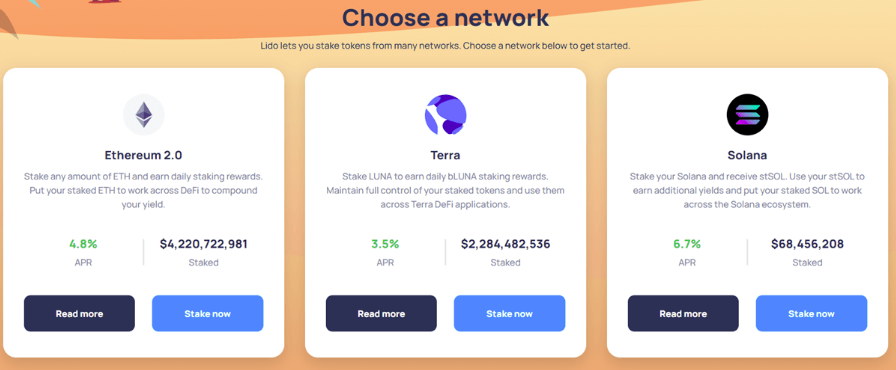
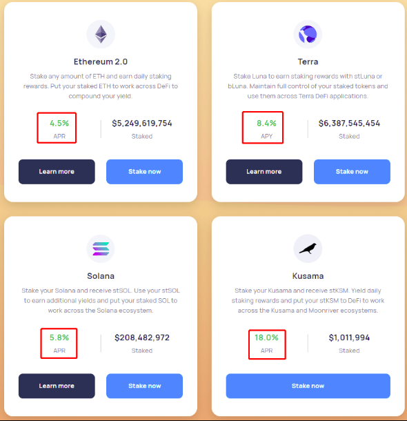
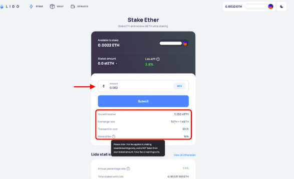

About Lybra finance?
Lybra Finance is a decentralized platform that provides a way for users to stake their Ethereum (ETH) and earn rewards while maintaining liquidity. Staking involves locking up cryptocurrency in a network to support its operations, secure the network, and, in return, earn rewards or interest.Lybra finance primarily focuses on Ethereum 2.0 staking, which is the upgrade to the Ethereum network transitioning from a proof-of-work (PoW) to a proof-of-stake (PoS) consensus instrument. Here are some key details about Lybra finance Ethereum 2.0 Staking: Lido allows users to stake their ETH in the Ethereum 2.0 Beacon Chain, which is the PoS chain. This involves locking up a certain amount of ETH in a validator contract, participating in the network's consensus, and earning rewards in the form of newly minted ETH.Lybra finance:
One of the main advantages of using Lido is that it provides Lybra finance. When you stake your ETH with Lybra finance, you receive stETH tokens in return, which represent your staked ETH and the rewards you're earning. These stETH tokens are transferable and can be used in DeFi protocols, providing liquidity and allowing users to trade, lend, or borrow against their staked assets.
Decentralization: Lybra finance aims to be a decentralized Lybra finance infrastructure. They use a decentralized network of node operators to run validators on the Ethereum 2.0 network, which adds a layer of security and decentralization to the Lybra finance process.Lybra Rewards: Users who stake their ETH with Lido typically earn finance rewards in the form of additional ETH. These rewards come from the network's issuance and are distributed to finance as an incentive for securing the network.
Risks: Lybra finance always carries certain risks, including potential slashing penalties if the validators misbehave, and the locked ETH cannot be easily accessed until the Ethereum 2.0 upgrade is complete. It's important to understand these risks before participating in finance.
Participation: To stake with Lybra finance, users typically need to convert their ETH into stETH tokens, and they can do this through the Lido platform or participating DeFi exchanges and services that support stETH.
Please note that the information provided here is based on my last knowledge update in September 2021, and the details about Lido Finance and its Lybra finance services may have evolved or changed since then. I recommend visiting the official Lido Finance website or consulting more recent sources for the most up-to-date information on Lybra finance
StakingService
Lido provides a staking facility that allows users to stake theirEthereum (ETH) and receive stETH (Staked Ether) tokens in return. stETHrepresents a claim on the staking rewards generated by the ETH deposited in theLido staking pool.
Liquid Staking
Lido's approach to staking is known as "liquid staking." This means that when you stake your ETH with Lido, you receive stETH tokens in return, which are liquid and can be freely traded or used in other DeFi applications. This is different from traditional staking, where your funds are locked up.
Decentralized Validators
Lido uses a network of decentralized validators to stake the ETH on behalf of users. Validators are responsible for participating in the Ethereum PoS network and earning rewards, which are then distributed to stakers in the form of staking rewards.
Earning Rewards
By staking with Lido, you can earn a share of the rewards generated by the validators. These rewards are typically in the form of additional stETH tokens, which are automatically credited to your account.
Risk Mitigation
Lido aims to minimize the risks associated with staking by using a decentralized network of validators. The protocol also has a liquidation mechanism to ensure that stakers' funds are secure.
User-Friendly
Lido makes staking more accessible to a wider range of users who may not have the technical expertise or the minimum amount of ETH required to run their own validator node.

Introducing Stargate, the first and only bridge to solve the Bridging Trilemma, unlocking seamless composability; enabling the wrapping of all existing DeFi applications. For example, the video below shows how you could wrap Stargate and Uniswap to perform an any asset to any asset swap in a single click between chains.
Please note that DeFi protocols like Lido come with inherent risks, including smart contract vulnerabilities and market fluctuations. Always conduct thorough research, only invest what you can afford to lose, and use reputable sources to access the Lido platform. Additionally, the Lido protocol may have evolved since my last update in September 2021, so consult their official documentation and announcements for the most current information and instructions on using Lido staking.
Launch
In two days (March 17th), Stargate’s liquidity generation event begins, leading off with an auction followed by Stargate going live with a simultaneous bonding curve. All funds raised during the event will be owned by the protocol.
Auction
- Starts 12pm EDT March 17th, 2022 on https://stargate.finance
- 100M STG tokens available (10% of total supply) [MetaMask & WalletConnect supported]
- Auction ends when $25M USDC has been purchased or after 48 hours have elapsed, whichever comes first, making the maximum price per token $0.25
- At the end of the auction the 100M STG is frozen for 12mo followed by 6mo linear unlocking for participants

Create
Lybra Finance primarily operates through decentralized applications (DApps) on the Ethereum blockchain. To create an account or participate in Lybra finance, you typically need to interact with their DApp using a compatible Ethereum wallet. Here are the general steps to create an account and start staking with Lybra finance:
Set Up an Ethereum Wallet
Before you can interact with Lybra's DApp, you need an Ethereum wallet. Some popular Ethereum wallets include MetaMask, Trust Wallet, Coinbase Wallet, and MyEtherWallet. Install your preferred wallet and create a new Ethereum address if you don't have one already.
Add ETH to Your Wallet
Ensure that your Ethereum wallet contains enough ETH to cover the amount you want to stake and the transaction fees associated with finance
Visit the Lybra finance Website
Please be cautious and ensure you are visiting the correctand official website to avoid phishing scams.
Connect Your Wallet:
On the Lybra finance website, there should be an option to "Connect Wallet" or a similar button. Click on it and select your Ethereum wallet from the list of supported wallets. This will establish a connection between your wallet and the Lybra DApp.
Deposit ETH and Stake
Once your wallet is connected, you should see options to deposit your ETH and stake it using the Lybra finance DApp. Follow the on-screen instructions to deposit your ETH into the Lybra finance contract. In return, you will receive stETH tokens, which represent your Lybra finance ETH and the rewards you'll earn.
Confirm and Sign Transactions
Throughout this process, you'll need to confirm and sign transactions using your Ethereum wallet. These transactions will interact with the Lido smart contracts on the Ethereum blockchain, so make sure you understand and review the transaction details carefully.
Track Your Staking Rewards
After Lybra finance, you can track your finance rewards, and your stETH balance may increase over time as you earn rewards from Ethereum 2.0 finance.Please keep in mind that the specific steps and user interface of the Lybra finance DApp may have changed since my last knowledge update in September 2021. Therefore, it's essential to refer to the most up-to-date instructions and user guides provided by Lybra finance on their official website or community resources. Additionally, be aware of potential risks associated with Lybra finance, including slashing penalties, and consider doing a thorough research and understanding the terms and conditions before Lybra finance your assets with Lido or any other platform.
Action
Lybra finance on the Lybra platform involves participating in Ethereum 2.0 staking and earning Lybra finance rewards in the form of stETH tokens. To stake with Lybra , you'll need an Ethereum wallet and follow these steps:
Set Up an Ethereum Wallet:
If you don't already have one, create an Ethereum wallet. Popular choices include MetaMask, Trust Wallet, MyEtherWallet, or any other wallet that supports Ethereum.
Acquire Ethereum (ETH):
Ensure that your wallet contains enough ETH to cover the amount you want to stake and any transaction fees associated with the staking process.
Connect Your Wallet:
On the Lybra finance website, look for an option to "Connect Wallet" or a similar button. Click on it and select your Ethereum wallet from the list of supported wallets. This establishes a connection between your wallet and the Lybra finance
Deposit ETH and Stake:
Once your wallet is connected, you should see options to deposit your ETH and stake it with Lybra finance. Follow the on-screen instructions to deposit your ETH into the Lido staking contract. In return, you will receive stETH tokens, which represent your staked ETH and the rewards you'll earn.
Confirm and Sign Transactions:
During the deposit and finance process, you will need to confirm and sign transactions using your Ethereum wallet. These transactions interact with the Lybra smart contracts on the Ethereum blockchain. Carefully review and confirm these transactions.
Track You finance Rewards:
After finance, you can monitor your finance rewards. Your stETH balance may increase over time as you earn rewards from Ethereum 2.0 finance.
Unstacking Funds (Optional):
If you wish to unstake or withdraw your finance ETH and rewards, follow the steps provided by Lybra Finance to initiate the process. Keep in mind that there may be certain unstaking periods or waiting periods.
It's important to note that the specific steps and user interface of the Lybra finance DApp may have changed since my last knowledge update in September 2021. Therefore, I recommend referring to the most up-to-date instructions and user guides provided by Lybra finance Finance on their official website or community resources.
Additionally, be aware of the potential risks associated with Lybra finance, including slashing penalties, and conduct thorough research and due diligence before Lybra finance your assets with Lybra finance or any other platform.
Use
Using Lybra finance involves participating in Ethereum 2.0 finance through the Lido Finance platform. Here's a step-by-step guide on how to use Lybra finance
Set Up an Ethereum Wallet
To use Lybra finance, you need an Ethereum wallet. Popular choices include MetaMask, Trust Wallet, MyEtherWallet, and others. If you don't have one, create a wallet and securely store your private keys or recovery phrases.
Acquire Ethereum (ETH):
Ensure that your Ethereum wallet contains enough ETH to cover both the amount you want to stake and the transaction fees associated with Lybra finance.
Connect Your Wallet:
On the Lybra finance website, look for an option to "Connect Wallet" or something similar. Click on it, and select your Ethereum wallet from the list of supported wallets. This will establish a connection between your wallet and the Lybra finance DApp.
Deposit ETH and finance:
After connecting your wallet, you should see options to deposit your ETH and finance it with Lid Lybra o. Follow the on-screen instructions to deposit your ETH into the Lido finance contract. In return, you will receive stETH tokens, which represent your staked ETH and the rewards you'll earn.
Confirm and Sign Transactions:
Throughout the deposit and staking process, you will need to confirm and sign transactions using your Ethereum wallet. These transactions interact with Lybra finance smart contracts on the Ethereum blockchain. Carefully review and approve these transactions.
Track Your Lybra finance Rewards:
Once your ETH is staked with Lybra , you can monitor your Lybra finance rewards. Your stETH balance may increase over time as you earn rewards from Ethereum 2.0 staking.
Unstacking or Withdrawing Funds (Optional):
If you wish to unstake or withdraw your staked ETH and earned rewards, follow the instructions provided by Lybra finance. Keep in mind that there may be certain unstaking periods or waiting periods, depending on the specific terms and conditions.
Please note that the exact steps and user interface of the Lybra finance may have evolved since my last knowledge update in September 2021. Therefore, I recommend visiting the official Lybra finance website or consulting their up-to-date user guides and resources for the most current information and instructions on using Lybra finance.
Additionally, it's crucial to be aware of the potential risks associated with staking, including slashing penalties, and conduct thorough research and due diligence before staking your assets with Lido or any other platform
Work
Lybra finance Finance provides a way for users to stake their Ethereum (ETH) and earn rewards through Ethereum 2.0 staking while also maintaining liquidity through a token called stETH. Here's how Lido Lybra finance works:
Prepare an Ethereum Wallet:
You'll need an Ethereum wallet to interact with Lybra finance. Popular options include MetaMask, Trust Wallet, and MyEtherWallet. Ensure you have some ETH in your wallet to get started.
Connect Your Wallet:
On the Lybra finance website, look for an option to "Connect Wallet" or a similar button. Click on it and select your Ethereum wallet from the list of supported wallets. This establishes a connection between your wallet and the Lybra finance DApp.
Deposit ETH and Stake:
Once your wallet is connected, you'll see options to deposit your ETH and stake it with Lybra finance. Follow the on-screen instructions to deposit your ETH into the Lybra finance contract. In return, you will receive stETH tokens, which represent your finance ETH and the rewards you'll earn.
Confirm and Sign Transactions:
During the deposit and finance process, you will need to confirm and sign transactions using your Ethereum wallet. These transactions interact with Lybra finance smart contracts on the Ethereum blockchain. Carefully review and approve these transactions.
Receive stETH Tokens:
After successfully ETH with Lybra , you will receive stETH tokens in your wallet. These tokens represent your finance ETH and the rewards you earn. stETH is a liquid version of staked ETH, and it can be used in various DeFi protocols.
Track Staking Rewards:
As you continue to Lybra finance, you will earn rewards in the form of additional stETH tokens. These rewards come from the Ethereum 2.0 network's issuance, which is distributed to finance as an incentive for securing the network.
finance or Withdrawing Funds (Optional):
If you want to unfinance or withdraw your ETH and earned rewards, you can follow the instructions provided by Lybra finance. Be aware that there may be specific unstaking periods or waiting periods, depending on the terms and conditions.It's essential to note that the exact steps and user interface of the Lybra finance may have changed since my last knowledge update in September 2021. Therefore, I recommend visiting the official Lybra Finance website or consulting their up-to-date user guides and resources for the most current information on how Lybra finance works.Additionally, be aware of potential risks associated with finance, including slashing penalties, and conduct thorough research and due diligence before staking your assets with Lybra or any other platform.
STG
As of my last knowledge update in September 2021, there is no widely recognized or established cryptocurrency or project called " Lybra finance STG." It's possible that the term or project you're referring to may not exist or has emerged after my last update. If " Lybra finance STG" is a relatively new project or term, I recommend conducting a thorough online search to gather the most current and accurate information about it. Additionally, be cautious when dealing with new or relatively unknown cryptocurrency projects, as the cryptocurrency space can be risky and prone to scams. Always verify the legitimacy of a project and consider consulting reputable sources or community forums for more information and insights. If you have any specific questions or need information on a different topic related to cryptocurrencies or blockchain technology, please feel free to ask, and I'll do my best to assist you.
It's possible that "STG" could refer to something specific or new related to Lido or Ethereum staking, but without more context or information, it's challenging to provide a precise explanation. If "STG" represents a new feature, token, or term related to Lido staking or Ethereum 2.0, I recommend checking the official Lido Finance website, their documentation, or their official communication channels for the most up-to-date information and clarification on what "STG" might signify in the context of Lido staking.